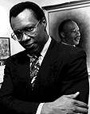

By John D. Thomas
Click here to read alumna Megan Dunbar's Atlanta Journal/Constitution editorial on AIDS prevention in Uganda.
On September 23, 1984, Centers for Disease Control (CDC) epidemiologist James Curran was in Manhattan to address a meeting of the New York Physicians for Human Rights. "AIDS will certainly be the major cause of death during the lifetime of everyone here, and probably through the twenty-first century," he told the group of two hundred gay physicians. "In spite of good intentions and continuing efforts of the gay community and scientific sector, we should not expect scientific technology to rescue us from AIDS in the next few years, although eventually technology may help conquer the disease."
As the U.S. government's unofficial AIDS ambassador, Curran traveled around the nation and the world helping people understand the deadly power of the epidemic. To underscore how widespread the problem would become, he informed the assembled doctors that in the next five years twenty-five thousand Americans would have AIDS.
"Ironically, Curran's projections that night vastly underestimated the scope of the AIDS epidemic," journalist Randy Shilts wrote in And the Band Played On, his in-depth examination of the AIDS crisis. "There would be twenty-five thousand AIDS cases within two years, not five, and by then, the estimates of infected Americans would increase fivefold."
Things have only gotten worse. Since the first AIDS case was identified in 1981, 270,870 Americans have died from the disease, and the World Health Organization estimates that by the year 2000 between 30 million and 40 million people worldwide will test positive for HIV, the virus that causes AIDS. But the most disturbing facet of the crisis surrounding AIDS, which researchers have described as "the nastiest microbe humanity has encountered in centuries, if not in all of human history," eschews numerical tabulation. According to Curran, "We're really just at the beginning of the disease."
After more than two decades of work with the CDC, Curran recently accepted the position of dean of the Rollins School of Public Health. Before joining the University, he was acting director of the CDC's Division of HIV/AIDS Prevention and assistant surgeon general of the United States. When President Bill Clinton learned about his career move, he sent Curran a letter of thanks for his efforts at the CDC. "Your work at the CDC and as an Assistant Surgeon General in the Public Health Service Commissioned Corps has exemplified the energy, compassion, and scientific integrity that makes our nation a pioneer in disease prevention and health promotion worldwide," the President wrote. "Your leadership in the area of HIV and AIDS prevention has strengthened our global response to this epidemic and served as a calm voice of scientific reason during some difficult times."
Curran said he was drawn to his new position for two reasons: the reputation and the location of the School of Public Health. "Although it's only five years old, the School of Public Health has its strong roots within the medical school and Health Sciences Center at Emory and is really poised for the next move up in distinction," says Curran from his corner office on the eighth floor of the Grace Crum Rollins Building, which boasts a spectacular view of downtown Atlanta. "It is already one of the better schools of public health in the country, and it has, of course, wonderful facilities."
In 1990, the School of Public Health became the first new school founded at the University in more than seventy years. Offering both master's and doctoral degrees, it is one of the nation's fastest growing public health programs, and it recently moved into the state-of-the-art, 140,000-square-foot Rollins Building. Dedicated to promoting health and preventing illness in the United States and around the world, the school has ninety full-time faculty members and more than two hundred adjunct faculty in six academic departments: behavioral sciences and health education, biostatistics, environmental and occupational health, epidemiology, health policy and management, and international health. Some 650 students representing more than forty nations are enrolled in the School of Public Health, and to date graduates have gone on to work in more than forty-five nations.
Another factor that motivated Curran's move is the School of Public Health's location in what he describes as the "public health capital of the world"--adjacent to the CDC and near the Carter Center, CARE, and the American Cancer Society's national headquarters. Curran says one of his primary goals will be to strengthen the already solid bonds between Emory and those institutions. "We have to build upon our unique situation," he explains. "We clearly want to improve what we do in international health and improve our collaborations with the Carter Center, CARE, and the CDC. We want to take advantage of our ability to add value to these partnerships."
Even though his main task will be running the School of Public Health, Curran will continue his research and work in HIV/AIDS, and he will use his connections at the CDC to facilitate greater involvement of the School of Public Health in HIV/AIDS research. "I've been working in the areas of surveillance, research, and prevention of HIV since 1981," he says. "I intend to retain a very strong interest in that area. It's not quite clear the extent that I'll be involved in HIV research, but I would like to help Emory University contribute and also personally contribute to the prevention of HIV in the United States and throughout the world."
The School of Public Health is already heavily involved in the fight against AIDS, and numerous research projects are underway. For the past two and a half years, Ronald Braithwaite, an associate professor in the Department of Behavioral Sciences and Health Education, has been examining and evaluating HIV/AIDS prevention programs in prisons. Claire Sterk-Elifson, an associate professor and associate director of the Women's and Children's Center, is researching women and HIV infection and is involved in an evaluation of an outreach program that aims to reduce HIV transmission in Atlanta's inner-city neighborhoods. And Professor of Biostatistics Ira Longini is working on two projects. He and several colleagues are developing methods for estimating the efficacy of a prophylactic HIV vaccine to be used in upcoming vaccine trials, and he is overseeing a Ph.D. student who is continuing research he began on developing statistical models for monitoring the progression of HIV-infected individuals. According to Longini, those models have been used to evaluate the effectiveness of interventions such as AZT and other anti-virals and to project the size of the HIV epidemic.
Colleen DiIorio, a professor in the Department of Behavioral Sciences and Health Education, is the lead investigator on several AIDS-related projects, including a study of the influence of family on whether or not children practice HIV-prevention strategies, and a study of the use of HIV-prevention practices among Atlanta-area college students. DiIorio is one of several public health faculty members working to evaluate "Let's Talk About AIDS," a theatrical performance for middle school students designed to increase AIDS awareness and postpone sexual activity, funded by the non-profit Project M.A.G.I.C. (Making AIDS Go away In Children). She is also involved in Project Light, an intervention program for people living in downtown Atlanta who are at high risk for contracting AIDS. According to DiIorio, "We teach them about HIV and AIDS, as well as skills they can use to prevent HIV, such as condom use and negotiation for safe sex in their relationships."
Another School of Public Health faculty member heavily involved in AIDS research is Stephen Thomas, an associate professor of community health in the Department of Behavioral Sciences and Health Education and director of the Minority Health Research Laboratory. Thomas is currently working with the African-American faith community to help strengthen its ability to influence the behavior of young people at risk for HIV. He says the aim of this project "is for the faith community, mass media outlets, gospel music radio stations, and other community partners to link together to enhance HIV education and related services that support AIDS risk reduction."
Even though Thomas says he is looking forward to the expertise and leadership Curran will bring to AIDS research at the School of Public Health, he is quick to recognize that Curran was a mentor for many on the faculty even before he arrived. "Dr. Curran is dean of the Rollins School of Public Health, but he is also the `dean' of AIDS prevention all across the nation," says Thomas. "His leadership at the CDC shaped much of the national and international research agenda on the prevention of HIV disease. He is a national treasure, and his influence stretches around the globe."
James Curran was one of the first scientists to come in contact with the disease that would eventually become known as AIDS. After attending the University of Notre Dame, he earned a medical degree from the University of Michigan in 1970 and a master's degree in public health from Harvard University in 1974. He then worked in Columbus, Ohio, as assistant commissioner of health, assistant professor at the Ohio State University College of Medicine, and as a clinical research investigator and coordinator for the CDC's Venereal Disease Control Division. In 1978, Curran moved to Atlanta to be the CDC's chief of the Research Branch, Sexually Transmitted Disease Control Division. One of the projects he was involved in was hepatitis-B vaccine trials in gay men. In early 1981, he was asked to review the draft of an article submitted to the CDC's journal Morbidity and Mortality Weekly Report . The article concerned five cases of a rare immune-system-related disease, Pneumocystis carinii pneumonia (PCP), all of which were discovered in gay men. Curran says because the cases were found in openly gay men, "it looked like it could be something that might be sexually transmitted."
The week of the publication of that article, Curran was in California, where colleagues who were also working on the hepatitis-B study told him they too had seen cases of PCP, and he began to think the problem could be more widespread. Soon after that trip to California, Curran was asked to fly to New York to examine a man suffering from Kaposi's sarcoma, a rare skin cancer that would become a common ailment in AIDS patients. Curran says it was during that meeting that he developed a personal connection to the plague that he would spend his professional life fighting.
"The man was a very handsome actor who was almost precisely my age," Curran recalls. "He had come from suburban Detroit as I had and had attended a private college as I had. He had left Detroit in part because he wanted to be an actor and in part because he was gay and he wanted to be in a different community. And he had these funny little blotches on his skin. I was thinking how similar this man's background was to mine, and as I continued to know him over the next year before he died, and watched him lose some one hundred pounds and lose his hair and waste away, I continued to have a personalized link to this case. I realized that this was another example of how diseases aren't fair, and that preventable illnesses shouldn't be accepted, and that we needed to get to the bottom of this and make things better."
Because of AIDS' lengthy latency, which can last for years, Curran and other researchers had no idea of the extent of the epidemic. In the first six months, there were about one hundred documented cases, but it wasn't until the first hemophiliac developed AIDS in late 1982 that all the pieces began coming together. "It then became absolutely apparent to everyone that this was a condition which was likely to be transmitted by a virus in the blood supply," Curran explains. "And that had implications beyond the ability to control risk through personal behavior and beyond our borders, since blood products for persons with hemophilia were shipped worldwide from the United States."
But the staggering proliferation of the disease wasn't finally understood until 1985, when an antibody test was developed that could detect HIV infection in the blood. According to Curran, the application of the antibody test to populations that had been previously used as controls, including hemophiliacs and gay men without the disease, showed that the presence of the antibody was many hundreds of times more common than the disease. It was then, he says, that researchers "realized that in the United States there were literally hundreds of times more people infected with the virus than had been diagnosed. In the United States, we probably had a quarter of a million people infected before the first five cases were reported."
Curran says the disease is now leveling off in this country. "Not going down," he cautions, "but leveling off. In the next half dozen years, we'll see fifty to sixty thousand deaths per year, and since 1982 AIDS has become the leading cause of death of men and women between twenty-five and forty-four."
Curran fears the biggest roadblocks in the fight against AIDS are apathy and acceptance. Ironically, he attributes these problems to medical and research advances that have been made in the fight against AIDS. He says it was remarkable what was accomplished in the first five years of the epidemic--the disease's modes of transmission were discovered, prevention recommendations were made, the virus antibody test was discovered, the blood supply was protected, and AZT was licensed as a treatment for AIDS. However, Curran says those breakthroughs led to unreasonable expectations as people began to expect a vaccine by 1988 and a cure by 1989. In fact, in the spring of 1984, then-Health and Human Services Secretary Margaret Heckler predicted at a press conference announcing the development of an HIV test that in two years a vaccine would be developed. When those advancements didn't happen, people began to see AIDS as an intractable situation, and when hope went by the wayside, attention and concern for the epidemic began to wane.
"The thing I'm concerned about worldwide is that AIDS will become a part of our landscape and it will be acceptable," he says. "There is a risk that we will begin to see AIDS at some inevitable level in industrialized countries and we will lessen our concern and commitment about it, which translates into virtually no concern worldwide. We need to maintain worldwide concern, and I think the commitment on a worldwide basis is clearly on the decline, from the U.S. government's point of view, the Agency for International Development's point of view, our own congressional interest, and U.N. support, and I'm worried about that."
Still, Curran is not without hope. In the past several years, scientists have made several breakthroughs that are helping AIDS patients live longer. They include improvements in the management of opportunistic infections and the development of protease inhibitors, drugs that block the enzyme that creates protease, a building block of the virus. "We're not anywhere near where we need to be, but I think we now see more avenues for therapy approaches," he says. "These things take some time, and the important thing is steady progress."
Click here to return to Summer 1996 contents page.
Click here to return to Emory University Home Page.